American Lotus
Scientific Name(s):
Nelumbo lutea
Abundance:
uncommon
What:
nuts, tubers
How:
nuts raw, roasted, pounded into flour; tubers raw, roasted, candied, baked.
Where:
still water
When:
nuts fall, winter; tubers late summer, fall
Nutritional Value:
nuts protein, carbohydrates; tubers starch
Dangers:
none...well, occasionally alligators in Texas.
Leaf Arrangement: The leaves are peltate, meaning the leaf's stalk attaches to the center of the leaf blade, and they rise well above the water surface on long petioles.
Leaf Shape: Leaves are circular and large, commonly measuring 18 to 36 inches in diameter.
Leaf Venation: The venation is radiate, sometimes called orbicular. Veins start from the point where the petiole attaches to the underside of the leaf and run out to its edge, sometimes branching between stem and edge.
Leaf Margin: Margins are smooth and entire, forming a distinctive rounded shape without indentations.
Leaf Color: A bright green on the upper surface, often with a waxy coating that can repel water.
Flower Structure: Flowers are large and solitary with numerous petals, rising above the water on stout stalks, typically 12 to 18 inches across.
Flower Color: The blooms are a soft yellow, with a central cone-like structure that houses numerous carpels.
Fruit: The fruit is an aggregate of nuts nestled in a pit in a funnel-shaped receptacle which becomes woody and conical as it matures. Each nut is visible through an opening in the top of the funnel/cone.
Seed: Seeds are large, hard, and ovoid, about 0.5 to 0.8 inches in length, with the capability to remain viable for up to 100 years.
Stem: Stems are actually elongated petioles that are thick and waxy, reaching heights of 3 to 6 feet above the water surface.
Hairs: There are no hairs on the stems (petioles) or flowers; both are characterized by a smooth surface. The top side of the lrge, round leaves are covered in microscopic hairs that impart a hydrophobicity to the the leaf surface, but are too small to feel by touch or see by the unaided eye.
Height: The plant can reach an overall height, including the flower stalks, of up to 8 feet above the water level.
Lotus plants. In shallow water they often stand out a foot or more above the water.
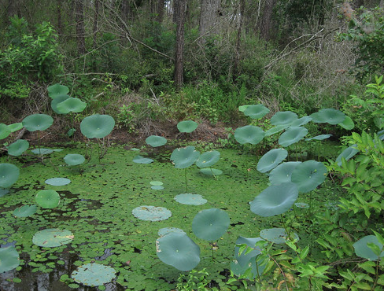
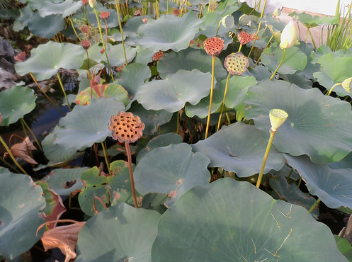
Close-up of a lotus leaf. They are intact circles, unlike the cloven form of regular water lily pads. Lotus pads can grow to over two feet in diameter. Microscopic, hydrophobic hairs on the surface of the lotus pads cause water to bead up and run like mercury.
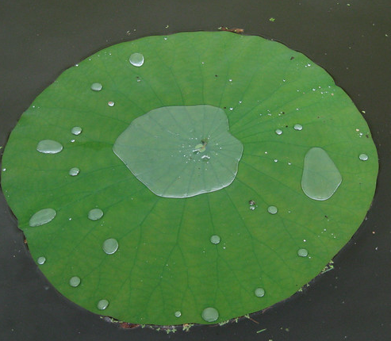
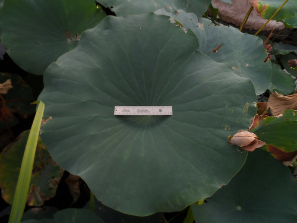
Small lotus pad in spring. Note the two lighter hemispheres mark at it's center.
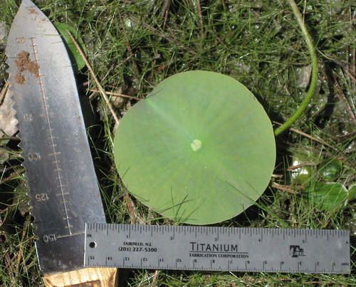
Lotus tuber. Raw it tastes kind of like a potato.
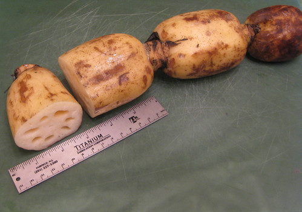
Lotus flowers are large, up to a foot across and the number of seeds they contain can vary.
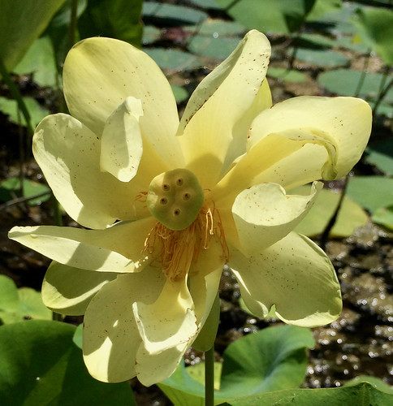
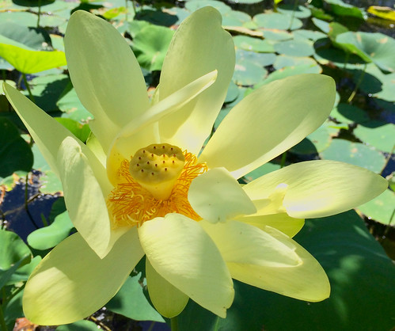
Lotus seed pod ready for picking.
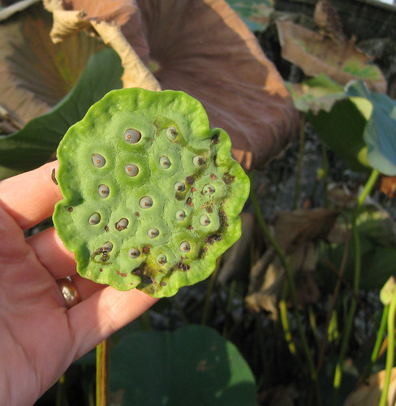
A perfect lotus nut, ready to be shelled.
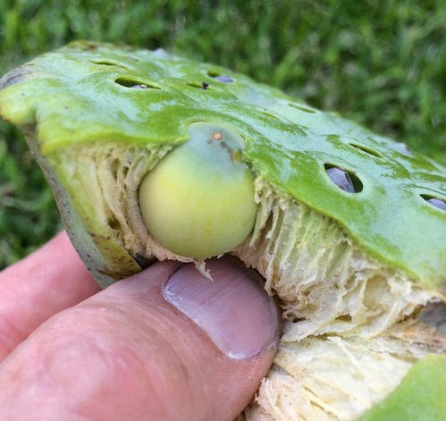
A shelled lotus nut. You still have to remove the green, baby plant before roasting and eating otherwise the nut will be bitter.
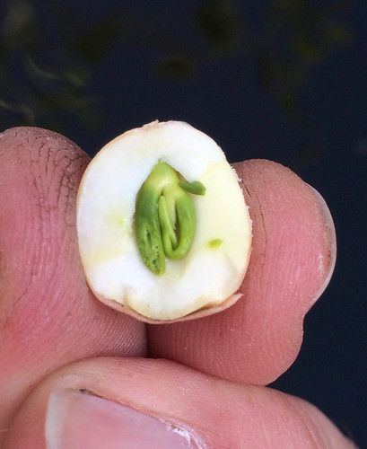
Lotus seedpods and nuts after drying in the wild.
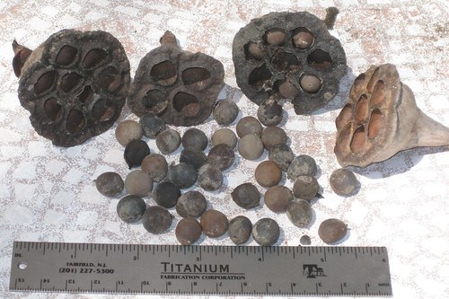
Cracked lotus nut. The small, green plant germ (plant embryo) is very bitter and must be removed. The nuts are very hard to crack.
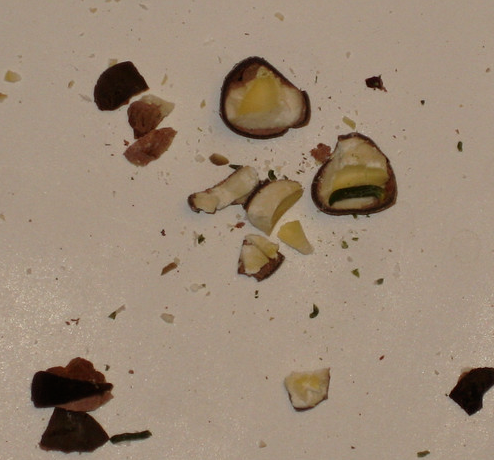
Common in many shallow, still water, lotus are often mistaken for some sort of large water lily. The main differences between lotus and water lilies are lotus "pads" are round & intact whereas water lily pads have a cleft or gap in the pad and so aren't a complete circle. Also, lotus pads grow up to a foot out of the water on strong stalks while lily pads stop growing at the surface of the water. Lotus seedpods look like weird, green showerheads pointing up at the sky while green and then drooping face down towards the water when brown and dry. The tubesrs are thick, long, segmented and MUCH tastier than water lily tubers!
Lotus nuts were a much-beloved food of Native Americans due to the flavor and high-energy content. After cracking and removal of the small, bitter, green plant embryo the seeds can be eaten raw, roasted, roasted then pounded into flour, or candied. Toasting, boiling, then mushing up the seeds gives a hearty porridge that reminds me of Malt-O-Meal.
Lotus tubers can be somewhat of a challenge to harvest. The tubers grow during the summer at the end of the lotus runners. Follow a pad stem or seedpod stem down to its base runner then follow this runner to its end. These tubers can be eaten raw, roasted, or candied by boiling in a concentrated sugar solution. Mix a little ginger in with the lotus root when you candy it for a real treat!
{kind=link}
{kind=link}
{kind=link}
{kind=link}
{kind=link}
{kind=link}
{kind=link}
{kind=link}
{kind=link}